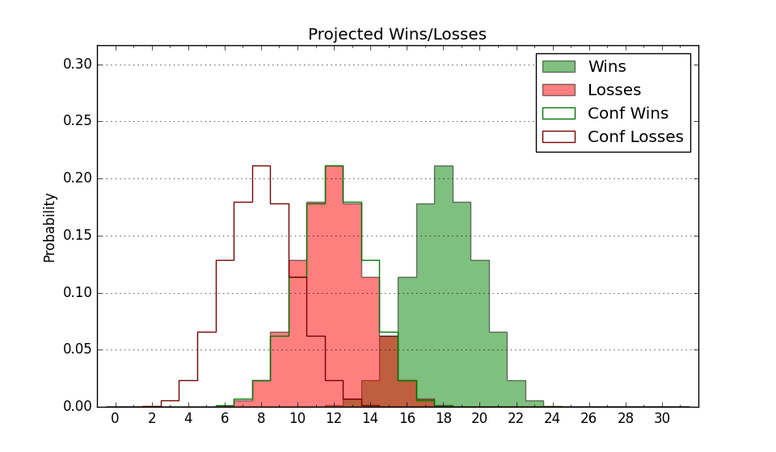

| Home | Game Probabilities | Conferences | Preseason Predictions | Odds Charts | NCAA Tournament |
| City: | Emmitsburg, Maryland | |
| Conference: | Metro Atlantic (4th)
| |
| Record: | 4-2 (Conf) 10-6 (Overall) | |
| Ratings: | Comp.: -7.8 (249th) Net: -7.4 (249th) Off: 96.5 (315th) Def: 103.9 (143rd) SoR: 0.2 (127th) |
| Remaining | ||||||
|---|---|---|---|---|---|---|
| Date | Opponent | Win Prob | Pred. | |||
| 1/18 | Quinnipiac (218) | 58.2% | W 72-69 | |||
| 1/23 | @ Siena (273) | 40.3% | L 65-68 | |||
| 1/25 | Manhattan (295) | 74.8% | W 79-71 | |||
| 1/31 | @ Merrimack (191) | 25.2% | L 60-67 | |||
| 2/2 | @ Saint Peter's (257) | 36.7% | L 60-63 | |||
| 2/6 | Iona (307) | 77.0% | W 73-65 | |||
| 2/14 | @ Niagara (322) | 54.0% | W 69-68 | |||
| 2/16 | @ Canisius (360) | 78.2% | W 76-67 | |||
| 2/21 | Saint Peter's (257) | 66.4% | W 64-59 | |||
| 2/23 | Rider (328) | 81.1% | W 72-62 | |||
| 2/28 | @ Fairfield (327) | 55.5% | W 72-71 | |||
| 3/2 | Siena (273) | 69.7% | W 70-64 | |||
| 3/6 | @ Quinnipiac (218) | 29.0% | L 67-74 | |||
| 3/8 | Marist (211) | 57.6% | W 65-63 | |||
| Previous | Game Score | |||||
| Date | Opponent | Win Prob | Result | Off | Def | Net |
| 11/8 | @Maryland (21) | 2.1% | L 52-86 | -6.7 | -0.0 | -6.7 |
| 11/13 | @Bucknell (246) | 34.8% | W 93-89 | 16.7 | -9.9 | 6.8 |
| 11/16 | St. Francis PA (319) | 79.8% | W 66-58 | -12.0 | 7.4 | -4.6 |
| 11/20 | @Georgetown (81) | 8.1% | L 51-79 | -9.1 | -2.9 | -11.9 |
| 11/23 | Delaware St. (302) | 76.5% | W 76-66 | 5.2 | -10.1 | -4.9 |
| 11/30 | @Howard (290) | 45.2% | W 79-75 | 3.1 | 6.9 | 10.0 |
| 12/6 | @Marist (211) | 28.5% | L 50-53 | -12.5 | 16.9 | 4.4 |
| 12/8 | Fairfield (327) | 81.0% | W 101-94 | 32.2 | -35.3 | -3.1 |
| 12/14 | Loyola MD (312) | 77.8% | L 69-77 | -11.1 | -10.9 | -22.0 |
| 12/18 | @LIU Brooklyn (303) | 48.9% | W 80-72 | 16.4 | -6.1 | 10.3 |
| 12/21 | @Miami FL (145) | 17.5% | W 78-74 | -0.5 | 21.9 | 21.5 |
| 12/28 | @George Mason (78) | 7.6% | L 56-64 | -1.9 | 10.8 | 8.9 |
| 1/5 | Niagara (322) | 80.0% | W 68-62 | -13.7 | 10.5 | -3.2 |
| 1/10 | @Manhattan (295) | 46.5% | W 75-66 | 8.7 | 8.2 | 16.9 |
| 1/12 | Sacred Heart (298) | 74.9% | W 73-71 | -4.7 | -5.5 | -10.2 |
| 1/16 | @Rider (328) | 55.7% | L 60-66 | -19.8 | 7.9 | -11.9 |
| Stats & Trends | |||||
|---|---|---|---|---|---|
| Current | Day | Week | Month | Season | |
| Composite | -7.8 | -0.1 | -1.4 | +3.1 | +2.8 |
| Comp Rank | 249 | -1 | -17 | +31 | +28 |
| Net Efficiency | -7.4 | -0.1 | -1.8 | +3.6 | -- |
| Net Rank | 249 | -- | -25 | +34 | -- |
| Off Efficiency | 96.5 | -0.0 | -1.8 | -1.3 | -- |
| Off Rank | 315 | -1 | -24 | -33 | -- |
| Def Efficiency | 103.9 | -0.0 | -0.0 | +4.9 | -- |
| Def Rank | 143 | +1 | +5 | +103 | -- |
| SoS Rank | 313 | -3 | -30 | +2 | -- |
| Exp. Wins | 18.0 | -0.0 | -0.8 | +3.0 | +4.4 |
| Exp. Conf Wins | 12.0 | -0.0 | -0.8 | +1.6 | +2.1 |
| Conf Champ Prob | 4.8 | +0.1 | -9.0 | -1.3 | -1.7 |

| Advanced Stats | ||
|---|---|---|
| Stat | Value | Rank |
| Off Eff FG % | 0.476 | 276 |
| Off Ast Ratio | 0.147 | 169 |
| Off ORB% | 0.283 | 199 |
| Off TO Rate | 0.192 | 356 |
| Off FT Ratio | 0.337 | 165 |
| Def Eff FG % | 0.494 | 132 |
| Def Ast Ratio | 0.143 | 153 |
| Def ORB% | 0.300 | 230 |
| Def TO Rate | 0.144 | 217 |
| Def FT Ratio | 0.321 | 155 |